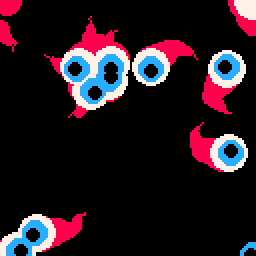
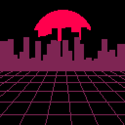
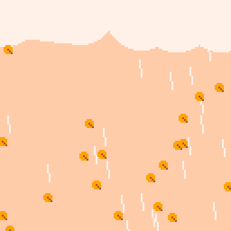
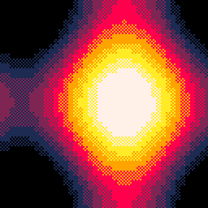
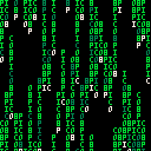
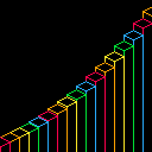
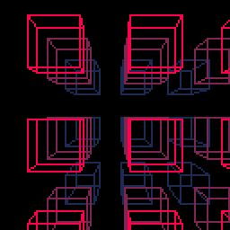
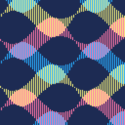

Tweetcarts are short snippets of code that fit in a single Twitter post (280 characters limit) and generate interesting visuals when run in the fantasy console Pico-8. You can find the original tweets here.
|  | ={}s={}l={0,12,7}for k=0,9 do add(s,{i=9,j=9,a=0})end::_::cls()for z in all(s)do z.a+=rnd(.2)-.1z.i+=sin(z.a)z.i%=128 z.j+=cos(z.a)z.j%=128add(c,{x=z.i,y=z.j,r=3,d=3})end for o in all(c)do e=8 if(o.d>0)e=l[o.r/3] circfill(o.x,o.y,o.r,e) if(o.r>8)o.d=-.3 o.r+=o.d end flip()goto _ |
|  | t=0w=128s={}function c(y,c,d)add(s,{x=-9,y=y,h=y-rnd(25)-9,w=5,c=c,d=d})end::_::cls()circfill(64,41,31,8)for b in all(s) do rectfill(b.x,b.h,b.x+b.w,b.y,b.c)b.x+=b.d end for i=0,w do g=i*9+t%9line(g,72,g*3-w,w)h=i*i+68line(0,h,w,h)end if(t%4<1)c(61,0,.5)c(72,2,1) t+=1flip()goto _ |
|  | w=0h=128r=rnd c=circfill ::_::cls(15)a=t()/2srand()for i=0,25 do c(((r(h)+a*20)%156)-15,r(10),20,7)n=(r(h)+a*9+w*2)%h m=(r(h)+a*400)%h line(n,m,n+1,m+9,7)k=r()x=(r(h)+cos(k-1+a)*15+w)%h y=(r(h)+abs(sin(k+a))*6+r(99)*a)%h c(x,y,2,9)line(x,y,x+2,y+2,4)end w+=sin(a/3)+1flip()goto _ |
|  | pal(7,2)pal(5,0)pal(6,1)pal(11,7)fillp(0xa5a5)::_::w=128k=t()/8 for i=0,w,3 do for j=0,w,3 do y=cos((i/w)-k*2)*4-sin((i/w)+k*4)*2 x=sin((j/w)-k*2)*4-cos((j/w)+k*4)*2 h=(y+x)/2n=mid(5,7.5-h,11)c=mid(5,8-h,11) rectfill(i,j,i+2,j+2,flr(c)*16+n) end end flip()goto _ |
|  | s='pico8' pal(2,11) ::_:: cls() srand() for i=0,128,4 do k=flr(t()*(2+rnd(10)))*6 j=flr(rnd(21))*6 c=7 for l=0,4+rnd(12) do y=(j+k-l*6)%132 p=(y/6+i/4)%5+1 ?sub(s,p,p),i,y,c c=2+rnd(1.2) end end flip()goto _ |
|  | a=0pal(13,8)l=line ::_::cls()for p=128,0,-8 do b=a a=p*.9+sin(p/300+t()/2)*19k=8+p/8%5l(p,118-b,p,114-a,k+1)l(p,128,p,123-a,k)l(p+8,128,p+8,119-a,k)l(p-8,118-a,p,122-a,k)l(p+8,118-a,p,122-a,k)l(p-8,118-a,p,114-a,k)l(p+8,118-a,p,114-a,k)end flip()goto _ |
b=97 ::_:: cls(1) a=97+t()/3 b=(flr(a)+1)*0.1+b*0.9 c=200 for i=0,c do k=64+cos(i/c)*25 j=64+sin(i/c)*25 x=k+cos(i/(c/b)+a/2)*30 y=j+sin(i/(c/b)+a/2)*30 circfill(x,y,2,12) end flip()goto _ |
|
|  | ::_::cls()pal(3,8)m=t()/2 for z=.8,1.6,.4 do k=z*2 for j=-3,2 do for i=-3,2 do x=8+16*i+cos(m)*16y=8+16*j+sin(m)*16 a=x*z+64 b=y*z+64 c=x*(z+.2)+64 d=y*(z+.2)+64 line(a,b,c,d,k) if(i%2==0 and j%2==0)rect(e,f,a,b,k)rect(c,d,g,h,k) e=a g=c end f=b h=d end end flip()goto _ |
d=0h=34 a=0v=1.08w=33 ::_::cls()srand()n=t()/4 a=abs(d)*d h+=a/40d+=1 if(h>96) d=-d+2 h=96 w+=v if(w>96or w<32)v=-v for k=0,999 do i=rnd()j=rnd()/2 y=h+sin(i+n)*32*sin(j) x=w+cos(j)*32 if(cos(i+n)<0)pset(x,y,14)else pset(x,y,2) end flip()goto _ |
|
|  | f=cos pal(13,135,1)::_::cls(1)n=t()/4o=0 for h=-8,152,48 do for i=0,128,2 do j=f(n+i/150)*12k=f(.5+n+i/150)*12 l=f(n-i/75)*12m=f(.5+n-i/75)*12 a=h+j+l b=h+k+l line(i,a,i,b,12+o%3)d=h+k+m+24q=h+j+m+24 line(i+1,q,i+1,d,12+(o+1)%3)end o+=2end flip()goto _ |